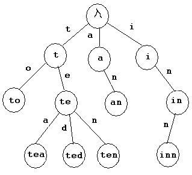
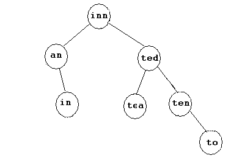

To augment the material in this chapter you may find this text useful: Foundations of Computation. This is a free textbook for a 1-semester course in theoretical computer science. This text is not about compilers per se but covers the underlying theory. See Ch 3 "Regular Expressions and FSA's" and Ch 4 "Grammars."
This half of chapter 3 of the Dragon book presents the algorithms and computational theory used by a lexical analyzer.1. scan the input stream for lexemes 2. categorize lexemes into token classes (might access symbol table) 3. possibly add entry to symbol table 4. interact with parser 5. take care of errors during steps #1 and #2How many lexemes are in this chunk of C code?
for (j=0; j > COL; j++){
/* compute offset */
offset = (i * COL) + j;
/* find value */
*i_array++ = pow(2,i) + j;
}
There are 14 + 10 + 13 + 1 = 38 lexemes. Following C
syntax, how many different tokens types are there?
There are only 6 different token types: keyword, punctuator, operator, identifier, number, comment
2-buffer algorithm to reload buffers with equal sized buffers and EOF sentinels at end of both buffers :
switch (*forward++) {
case eof:
if (forward is at end of first buffer) {
reload second buffer;
forward = beginning of second buffer:
}
else if (forward is at end of 2nd buffer) {
reload first buffer;
forward = beginning of first buffer;
}
else /* eof within a buffer marks end of input */
terminate lexical analysis;
break;
case other characters
}
In a 2-buffer scheme this statementn =(x- y)*5;is read into two buffers of size 8. The second EOF buffer below marks the end of actual input:
buffer 1 buffer 2
|n|space|=|(|x|-|space|EOF|y|)|*|5|;|EOF| | | |EOF|
In this scheme the two pointers in the lookahead buffer
may cross over each other:
| ......EOF..EOF|........EOF
^forward ^lexemeBegin
Terminology and Notation
Operations on Strings
Concatenation is the only operation that can be applied to the strings of a language. String concatenation can be expressed asst # string s glued to string tor with the exponentiation operator:
s^0 = ε, s^1 = s, s^2 = ss,...The empty string is the identity under concatentation; e.g. εs = sε = s, for any string s.
Operations on Languages
A language is a set. Operations on languages are set operations. There are three language operations:union, concatenation and closureThe union of two languages L and M is the union of the two sets L and M. L ∪ M contains string s if s is a member of L or s is a member or M.
String concatenation glues two or more strings together in the order in which they appear in the operation; e.g., st is the concatenation of string s followed by string t. When you apply concatenation to a language, you are applying the string operation to ALL strings in the set of L and M.
The concatenation of two languages L and M (denoted as LM) is the set of all strings formed by taking a string from L and a string from M and concatenating them. L^n is defined as the concatenation of each string in L with each string in L n times. L^0 is {ε}. Note that L^0 is not an empty set! L^0 is the set containing the null string.
A string operation on L and M is the cartesian production of the operation applied to each member of L with each member of M.
Kleene closure (*) is the union of of all concatenations of the language L with itself, including L^0. The positive closure of L (+) is the Kleene closure excluding L^0.
OPERATION DEFINITION AND NOTATION
Union of L and M L ∪ M = { s | s ∈ L or s ∈ M }
Concatenation of L and M LM = { st | s ∈ L and t ∈ M }
Kleene closure of L L* = { the union of L^i, for i from 0 to ∞ }
Positive closure of L L+ = { the union of L^i, for i from 1 to ∞ }
Examples
Let V be the set of vowels {a, e, i, o, u}. |V| = 5
Let C be the set of consonents {b, c, d, f, ... z}. |C| = 21.
V ∪ C, the union of V and C, is the set of letters { a, b, c, ..., x, y, z }
|V ∪ C| = |V| + |C| = 5 + 21 = 26 // '|S|' is the cardinality of set S
VC is the set of all vowels concatenated with all consonents
VC = { ab, ac, ad, af, ..., eb, ec, ed, ... ea, ... uz }
|VC| = 5 * 21 = 105
V^4 is the concatenation of of all vowels with all other vowels 4 times, thus
{ aaaa, aaae, aaai, aaao, aaau,
aaea, aaee, aaei, aaeo, aaeu,
...
auuu, euuu, iuuu, ouuu, uuuu }
|V^4| = |V|^4 = 5^4 ; V^4 is the permutation of 5 things taken 4 at a time
where items can be repeated
V* is the set of strings of all possible concatenations of vowels from V,
including ε
V+ is the set of strings of all possible concatenations of vowels from V,
excluding V^0 (the empty string)
V(V ∪ C)* is the concatenation of all vowels with any vowel or consonent
concatenated with any vowel or consonent zero or more times.
The above formalism provides the basis of Regular Expressions. You can easily
build more complicated expressions from here. For example, regex
V(V ∪ C)*, where | is the union operator.
denotes this set:
[a,e,i,o,u]([a,e,i,o,u] | [b-d,f-h,j-n,p-t,v-z])*
The transition from the formalism to the language of regular expressions is:
1. ε is a regex and L(ε) is {ε}
2. If s is a symbol in Σ then s is a regular expression and L(s) = {s}.
From this basis we add concatenation, union, * and + operators, and you can
inductively build any regular language:
1. (r) | (s) // means L(r) ∪ L(s)
2. (r)(s) // means the concatenation L(r)L(s)
3. (r)* // means (L(r))*
4. (r) // means L(r)
Use precedence and associativity conventions to drop parentheses:
operator precedence highest to lowest:
* // Kleene closure is left associative
concatenation // left associative
| // union is left associative
Examples
Let L(a) = a and L(b) = b. Then
1. regular expression a | b denotes language { a, b }
2. (a|b)(a|b) denotes { aa, ab, ba, bb }
3. a* denotes { ε, a, aa, aaa, aaaa, ..... }
4. (a|b)* is the language of &epsilon and all possible strings of a and b
5. (a*|b*)* denotes the same language as #4 -- the regexes are equivalent
6. a|a*b denotes the language { a, b, ab, aab, aaab, ... }
LAWS for regular expression. Let r, s, t be arbitrary languages
r|s = s|r
r|(s|t) = (r|s)|t
r(st) = (rs)t
r(s|t) = rs|rt; (s|t)r = sr|tr
εr = rε = r
r* = (r|ε)*
r** = r*
Regular definitions and extensions were added to make notation easier:
letter_ -> a | b | ... | z | A | B | ... | Z | _ digit -> 0 | 1 | 2 | ... | 9 id -> letter_( letter_ | digit )* + // one or more instances; the positive closure of *; r* = r*|ε ? // zero or one instance; r& = r | ε [] // character class; [a-z] is a|b|...|z.Examples
letter_ -> [A-Za-z_] digit -> [0-9] id -> letter_( letter_ | digit )* What language does this regular definition define? digit -> [0-9] digits -> [0-9]+ number -> digits (. digits)? ( E[+-]? digits)?Lex supports all the normal extensions including:
EXPRESSION MATCHES EXAMPLE
\c character c literally \$
. any character but a newline a.*b
r | s r or s a | b
r{m,n} between m and n occurrences of r a{1,5}
r/s r when followed by s abc/123
[^r] anything but r ( this is a [^abc]
a complemented character class )
String Terminology: A suffix of string s is any string obtained by removing zero or more symbols from the *beginning* of s. The suffixes of ban = {ban, an, n, ε}
A substring of string s is any string obtained by removing zero or more symbols from the beginning or the end of s. The substrings of ban = {ε, b, n, ba, an, ban}
The set of proper prefixes, suffixes, or substrings of s does not include s or ε
A subsequence of s is any string formed by deleting zero or more not necessarily consecutive positions of s; e.g., baan is a subsequence of banana. The subsequences of ban = {ε, b, a, n, ba, bn, an, ban} If n is the length of s, then the cardinality of the set of subsequences is 2^n - 1.
Transition Diagrams
Transition diagrams are flowcharts that depict how the scanner tests for a match on the regex from the beginning of input to the end of input.
Lex generates a scanner for you based on the regular expressions that you supply for each token. Under the covers, Lex builds and implements a transition diagram for each regex. The behavior of a lex scanner as it evaluates an input stream is based on the transition diagrams. To code a scanner manually, constructing a transition diagram and then implementing it is the best strategy.
A transition diagram is a directed graph with a finite number of states (vertices) in the graph. A state can be connected to another state by a directed edge. States represent where the scanner is in the regex based on the value of a single character in the input string. Edges are labeled with the input character that moves you from the current state to the next state. Transition diagrams are deterministic. In other words, there is only one choice when moving from state to state based on a particular input character (it is never the case that the scanner arbitrarily picks the next state to move to). A transition diagram can be represented in table form where rows denote the states and columns denote the input characters.
From the finite set of states, there is a single start state and at least one accepting state. States are uniquely labeled beginning from the start state that is labeled '0' (zero) by default.
Example.
Σ = {a, b}
Provide a regex for the language of
all strings over {a, b} that contain the substring
aaa. No other constraints.
regex = /(a|b)*aa(a|b)*/Draw a transition diagram for your regex.
a b
0 1 0
1 2 0
2 2 2 F = {2}, where F is the set of accepting states
Draw a transition diagram for this regex.
/(a|b)+aba/
a b
0 1 1
1 2 1
2 1 3
3 4 1 F = {4}
The Failure Function is a way of optimizing pattern matching.
PATTERN MATCHING ALGORITHM WITH FAILURE FUNCTION
--------------------------------------------------
0 1 2 3 4 5 6 7 8 9 10 11
input[11]: a b a b c a b c a b d e
--------------------------------------------------
0 1 2 3 4 5 6
pattern[6]: a b c a b d e
--------------------------------------------------
v
input: [a] b a b c a b c a b d e INITIAL STATE. Start checking at input[i]
pattern: [a] b c a b d e and pattern[i] for i=0.
v
input: a [b] a b c a b c a b d e i++ and compare. we have a match.
pattern: a [b] c a b d e
v
input: a b [a] b c a b c a b d e i++. FAIL. What do we do now? Slide the
pattern: a b [c] a b d e pattern to input[2] and start over. This
is more efficient than brute-force.
v
input: a b [a] b c a b c a b d e RESET. slide pattern to input[2]
pattern: [a] b c a b d e
v
input: a b a [b] c a b c a b d e i++. match.
pattern: a [b] c a b d e
v
input: a b a b [c] a b c a b d e i++. match.
pattern: a b [c] a b d e
v
input: a b a b c [a] b c a b d e i++. match.
pattern: a b c [a] b d e
v
input: a b a b c a [b] c a b d e i++. match.
pattern: a b c a [b] d e
v
input: a b a b c a b [c] a b d e i++. FAIL.
pattern: a b c a b [d] e
v
input: a b a b c a b [c] a b d e RESET. alide pattern to input[5]
pattern: a b [c] a b d e
v
input: a b a b c a b c [a] b d e match.
pattern: a b c [a] b d e
v
input: a b a b c a b c a [b] d e match.
pattern: a b c a [b] d e
v
input: a b a b c a b c a b [d] e match.
pattern: a b c a b [d] e
v
input: a b a b c a b c a b d [e] match.
pattern: a b c a b d [e] BINGO!
RESET is the Failure Function. It tells you how far to the right you can slide
the pattern. The algorithm is essentially to grab the longest proper suffix of
input that matches the longest proper prefix of the pattern.
Efficiency.
How does the efficiency of pattern matching with the Failure Function
compare to a brute force algorithm?
Let n be the size of the pattern. Let m be the size of the input text. The
number of comparisons in brute force is thus O(mn). What about FF? This trace
depicts why FF is O(m) in the worst case and O(n) in the best case:
a b a e c a b c e b d
e b d
a b a e c a b c e b d
e b d
a b a e c a b c e b d
e b d
a b a e c a b c e b d
e b d
v
a b a e c a b c e b d With Brute Force RESET back to input[1]!
e b d With FF reset to i since NO input suffix matches
any prefix in pattern.
v
a b a e c a b c e b d
e b d
v
a b a e c a b c e b d
e b d
v
a b a e c a b c e b d
e b d
v
a b a e c a b c e b d
e b d
v
a b a e c a b c e b d
e b d
v
a b a e c a b c e b d
e b d
v
a b a e c a b c e b d
e b d BINGO!
----------------------------------------------------------------
FF for pattern 'ababaa'
The transition diagram for pattern ababaa is (0 is initial state):
a b a b a a
[0] ---> [1] ---> [2] ---> [3] ---> [4] ---> [5] ---> [[6]]
The failure function (s denotes state):
a b a b a a
-----,---,---,---,---,---,---
s | 1 | 2 | 3 | 4 | 5 | 6 a
-----,---,---,---,---,---,--- s[1] means [0] ---> [1]
f(s) | 0 | 0 | 1 | 2 | 3 | 1 b
-----'---'---'---'---'---'--- s[4] means [3] ---> [4]
Reason as follows. Assume you are in state 5. In state 5 you are expecting an
'a' to move you to state 6 but do not get it (you get anything but 'a'). The
longest proper suffix on the input string that matches the longest proper
prefix in the pattern is 'aba'.
That takes you to State 3. You continue matching from State 3.
The data structure for pattern matching
with longest-prefix matching
is a TRIE (try) rather than a binary tree. For example, assuming
7 keywords: to, tea, ted, ten, an, in, inn, the trie looks like this:

A search in trie is O(m), where m is the length of the key.
How does this compare to a binary search tree? The search tree looks like this:

A search in a binary tree is O(m lg n), where n is number of keywords in the tree and m is the length of the keyword. Why m? Because once you hit the node you must do a linear comparison of the keyword to see if it is a match.